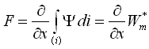
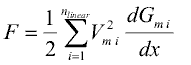
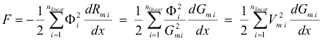

ReluctanceForceCalculationReluctance forces |
|
Information
This information is part of the Modelica Standard Library maintained by the Modelica Association.
Calculation of reluctance forces from lumped magnetic network models
Generally, the thrust F developed by a translatory electro-magneto-mechanical actuator (similar for the rotational case with torque and angular position) is equal to the change of magnetic co-energy Wm* with armature position x according to

(Ψ flux linkage, i actuator current). In lumped magnetic network models, the above equation simplifies to

where nlinear is the number of flux tube elements with constant relative permeability that change its permeance Gm i with armature position (index i), Vm i the magnetic voltage across each respective flux tube and dGm i/dx the derivative of the respective permeances with respect to armature position. Transition from the general formula based on magnetic co-energy to the latter one is outlined in [KEQ+12] for the reciprocal of the permeance, i.e., for the magnetic reluctance Rm. Note that

with Φi being the magnetic flux through each respective flux tube element.
Flux tube elements with non-linear material characteristics μr(B) in magnetic network models do not restrict the usability of the above equation. However, it is required that these nonlinear flux tube elements do not change its shape with armature motion (e.g., portion of a solenoid plunger where the magnetic flux passes through in axial direction). This limitation is not a strong one, since the permeance of nonlinear, but highly permeable ferromagnetic flux tube elements and its change with armature position compared to that of air gap flux tubes can be neglected in most cases. Because of this constraint, the dimensions of possibly nonlinear flux tube elements in sub-package Shapes.FixedShape are fixed, whereas the dimension in direction of motion of the linear flux tube elements in sub-package Shapes.Force can vary during simulation. For the flux tubes defined in this package with their rather simple shapes, the derivative dGm/dx is given analytically. For more complex shapes and variations of dimensions with armature motion, it must be provided analytically during model development, preferably by extending the partial model Interfaces.PartialForce.
The sub-package Shapes.Leakage contains flux tube shapes typical for leakage flux around prismatic or cylindrical poles. Since the permeance of these flux tubes does not change with armature position, they do not contribute to a reluctance actuator's thrust.